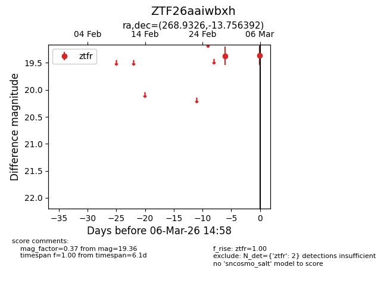
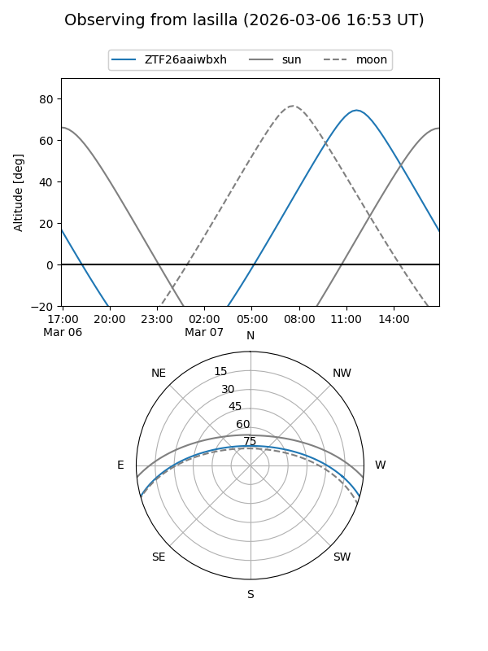
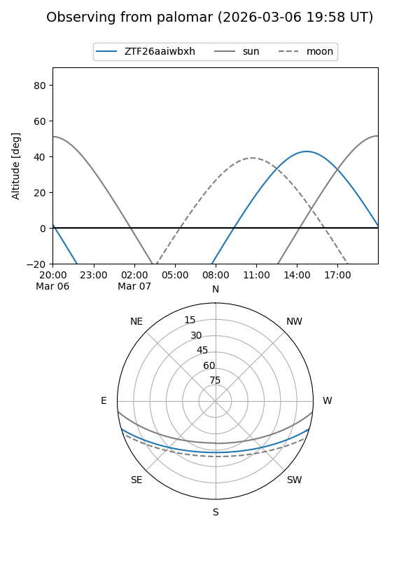

ZTF26aaiwbxh
Target ZTF26aaiwbxh at 2026-03-06 14:59
Aliases and brokers:
FINK: link
Lasair: link
ALeRCE: link
alt names
ZTF26aaiwbxh (ztf,fink_ztf)
Coordinates:
equatorial (ra, dec) = 268.9326,-13.75639
equatorial (HMS+DMS) = 17:55:43.83,-13:45:23.01
galactic (l, b) = (14.2796,+5.71790)
Flags:
Photometry:
last ztfr=19.36
2 ztfr detections
Lightcurve

Visibility


Additional plots